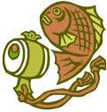

基準文字abcdeg:text-top中文
基準文字abcdeg:baseline中文
基準文字abcdeg:text-bottom中文
基準文字abcdeg: 2X2
基準文字abcdeg: 2X2
基準文字abcdeg:top中文
基準文字abcdeg:middle中文
基準文字abcdeg:bottom中文
基準文字abcdeg: 圖片的垂直對齊方式是 text-top.
基準文字abcdeg: 圖片的垂直對齊方式是 middle.
基準文字abcdeg: 圖片的垂直對齊方式是 text-bottom.
基準文字abcdeg: 圖片的垂直對齊方式是 top.
基準文字abcdeg: 圖片的垂直對齊方式是 bottom.